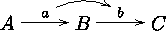

Xy-pic User's Guide 


If you build an entry with a long and complicated excursion then you
might wish to be able to refer to it later. Xy-pic provides a
mechanism for this: there is a special target form which we
haven't discussed yet:
This will introduce the new target "name" which will
refer to the target just before the =. This is particularly useful
inside excursions, of course, and can also be used after
labels.
Typeset .
Answer.
Xy-pic User's Guide
© Kristoffer H. Rose
<krisrose@brics.dk>
January 6, 1997
/
LaTeX2HTMLv96.1-h